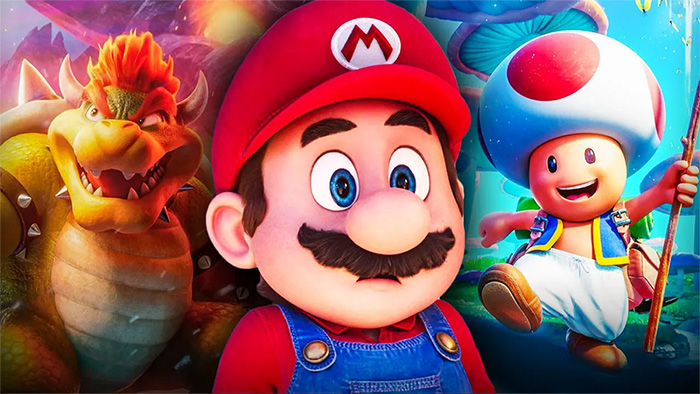

Réponds aux questions suivantes pour savoir de quel personnage de l'univers Super Mario tu es le plus proche !

Let's-a-go !
Réponds aux questions suivantes pour savoir de quel personnage de l'univers Super Mario tu es le plus proche !